ろぶーの気になる事 ／ 大阪・福島 ／ 旅行・グルメ
モクシー大阪新梅田に泊まってみた選ぶのも楽しい朝食と、モクシーらしい部屋のつくり
こんにちは、ろぶーです。
今回は、モクシー大阪新梅田に泊まったときの話です。モクシーには何度か泊まっているので、独特のかわいらしい雰囲気にも、だいぶなじみが出てきました。
今回は客室の写真をあまり撮っていなかったのですが、朝食はしっかり写真に残していました。種類が豊富で、おいしくて、あれもこれも食べたくなる朝ご飯。周辺の便利さと合わせて紹介します。
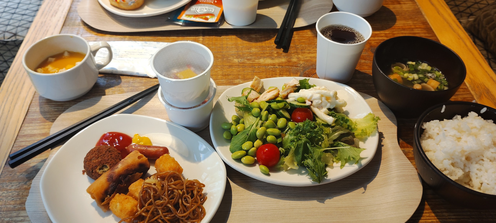
朝食の写真は大阪新梅田で撮影したものです。客室の紹介には、以前泊まったモクシー京都二条の参考写真を掲載しています。大阪新梅田の客室そのものを写した写真ではなく、内装や設備が同一であることを示すものではありません。
福島・梅田の街歩きにも便利な場所
駅からそれほど遠くなく、周辺にはコンビニもあって便利でした。公式案内では、JR福島駅から徒歩約5分。梅田方面へ出かけるときにも使いやすい場所です。
ホテルのレストランの味もよかったのですが、近くにはいろいろなジャンルのお店があるのも魅力。ホテルで食べるか、外で食べるか、気分に合わせて選べるのはうれしいですね。
滞在中は海外からのお客さんも多い印象でした。大阪市内のホテルの中では、私が泊まったときは料金も比較的手頃に感じました。ただ、宿泊料金は日程やプランで変わるので、予約するときの金額で比べてみてください。
種類が豊富で、選ぶのが楽しい朝食
朝食は、思っていた以上にいろいろ選べました。ご飯やみそ汁、温かい料理、サラダ、パン、シリアル。さらにドーナツやジュースまであって、全部はお腹に入らないくらいの種類でした。
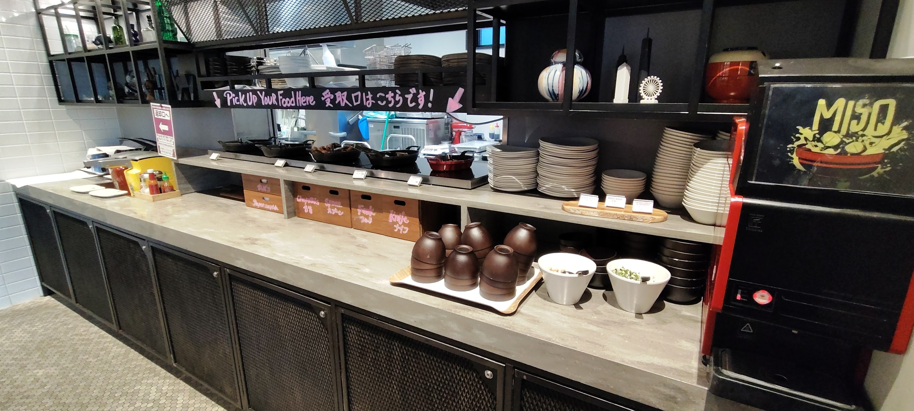
みそ汁のマシンがあるのもちょっと面白いところ。パンやコーヒーで軽く済ませるだけでなく、ご飯とみそ汁を選べるのがよかったです。
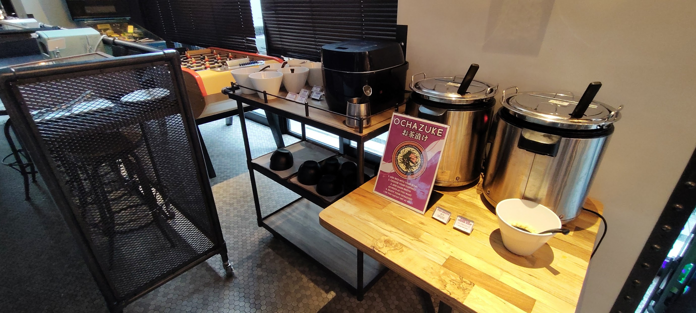
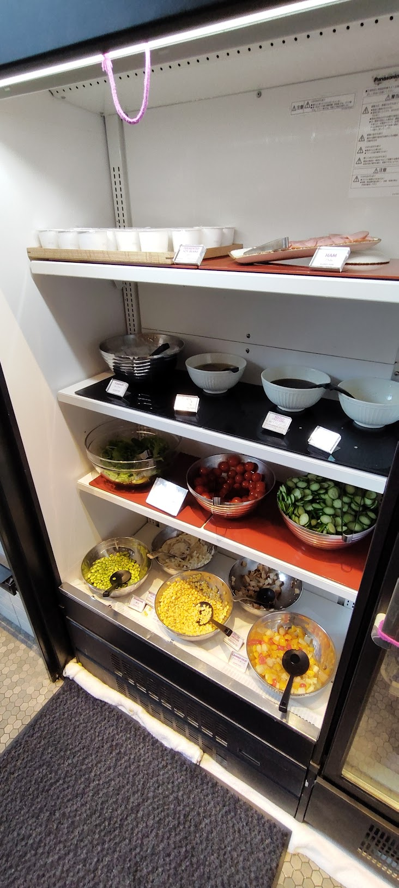
パンやシリアル、甘いものも
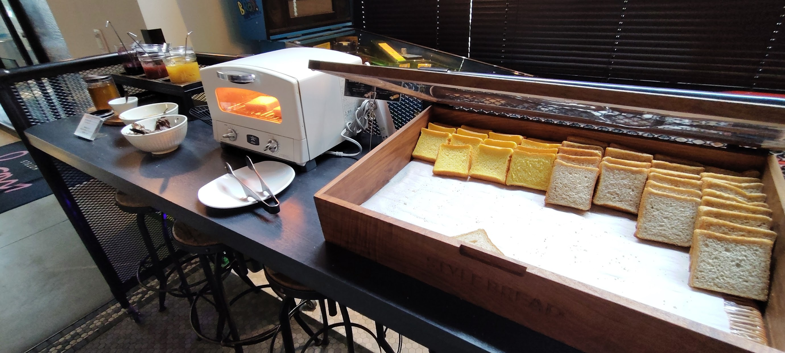
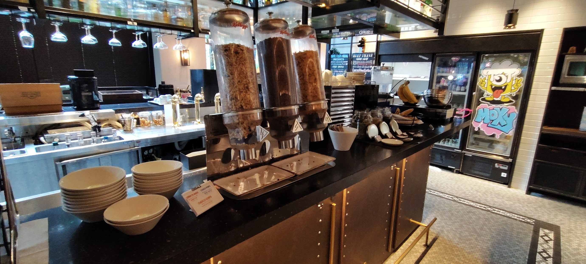
ドーナツも種類が豊富でした。食事のあとに少し甘いものが欲しくなって、こちらもいただきました。こうして写真を見返すと、朝からずいぶん楽しんでいますね。
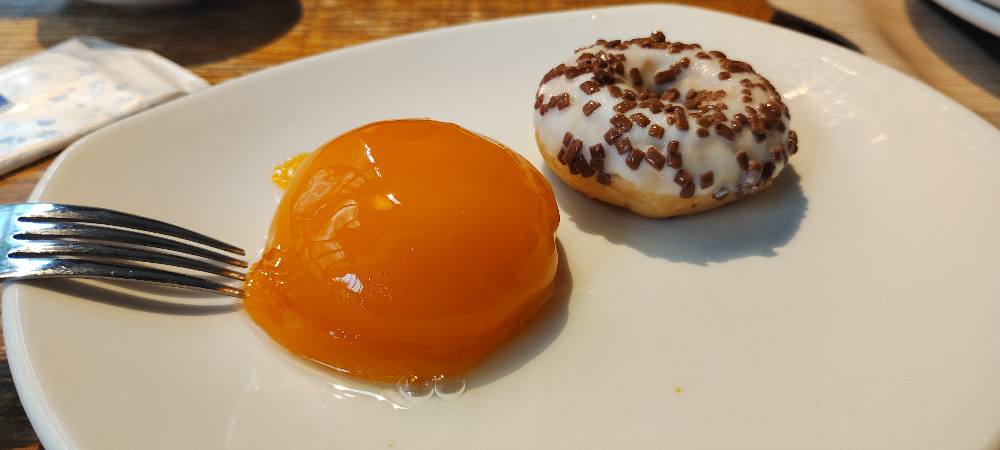
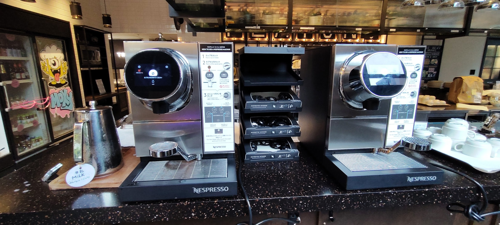
味もよく、和食と洋食を好みで選べる内容だったので、海外からのお客さんにも楽しんでもらえそうだなと感じました。
朝食の料理や提供内容は訪問時のものです。現在のメニュー、料金、朝食が含まれるかどうかは、宿泊プランやホテルの最新案内でご確認ください。
モクシーらしい、かわいらしい部屋のつくり
私が泊まったモクシーでは、部屋の雰囲気に共通するものを感じます。堅苦しさより、ちょっとした遊び心のあるつくりが印象に残りました。
椅子や荷物を置く折りたたみ式の台、いわゆるバゲージラックなどを壁に掛ける工夫も、モクシーらしいところ。使うときに下ろすという発想が面白く、かわいらしく感じました。
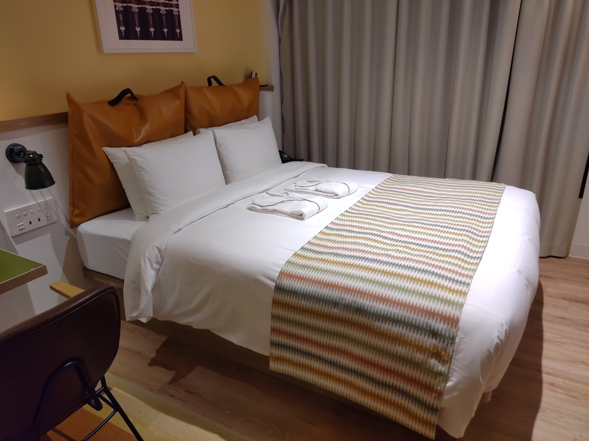
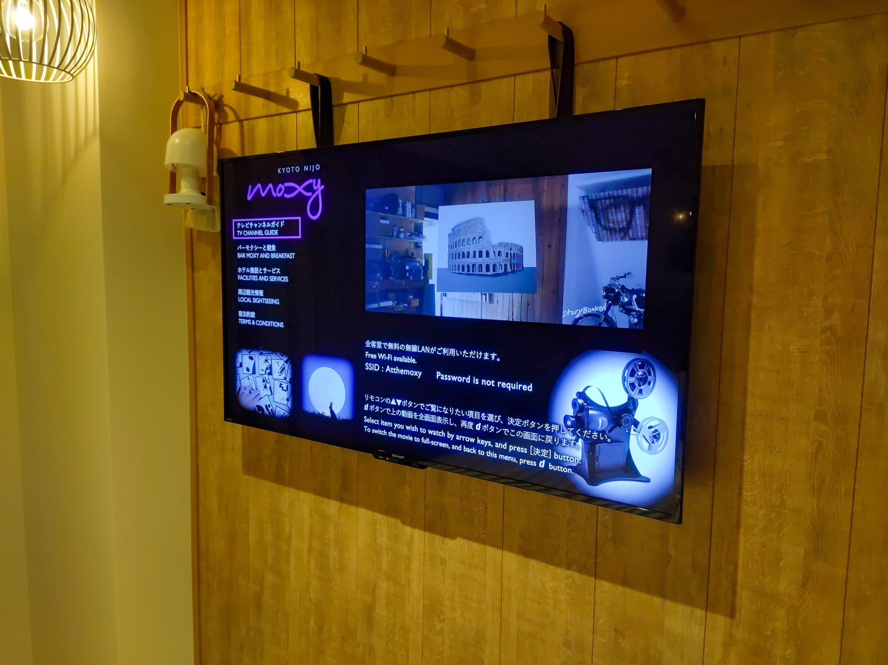
今回泊まった部屋は、浴槽ではなくシャワーでした。上から浴びるタイプと手持ちのシャワーの2種類があり、シャワーでも気分爽快。湯船につかりたい方は、予約前に客室設備を確認しておくとよさそうです。
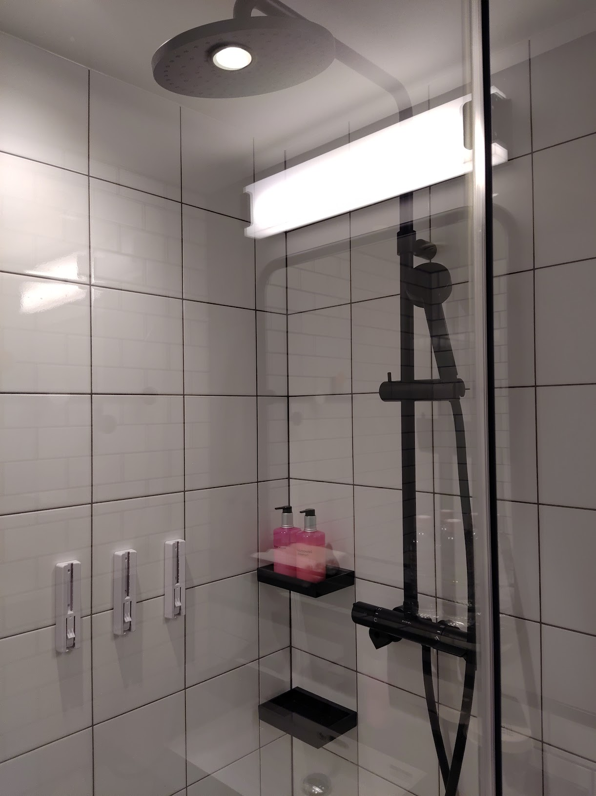
参考写真は別のホテル・別の滞在時のものです。大阪新梅田の客室の広さ、間取り、備品については、公式の客室案内で予約する部屋をご確認ください。
今回、プラチナ会員として受けた特典
私はMarriott Bonvoyのプラチナ会員で、マリオット系列のホテルをよく利用しています。今回のモクシー大阪新梅田では、次の特典を利用できました。
- ウェルカムドリンクのチケット
- 館内の飲食に使える券。彼女と2人で泊まったので、2人分をいただきました。
- コーヒーマシンを24時間利用できるサービス
金額の参考として、Marriott Bonvoyの公式共通案内では、アジアのモクシーのエリートウェルカムギフトの選択肢に、1泊につき10米ドル分の飲食クレジットが記載されています。これは現在の共通案内であり、今回いただいた券の金額を確認したものではありません。ホテルでの具体的な提供内容や適用人数は、チェックイン時にご確認ください。
私にとっては、この特典も滞在の楽しみのひとつでした。会員専用ラウンジを利用する代わりに、飲食の特典やコーヒーを楽しめた、という感覚です。これは私自身の感想で、ラウンジの代替サービスという公式な位置付けを説明するものではありません。なお、ホテルには一般の方も利用できるカフェ＆バーやラウンジスペースがあります。
会員特典を楽しみに宿を選ぶ方もいれば、立地や料金、部屋の雰囲気を重視する方もいると思います。特典の有無だけでなく、自分の過ごし方に合うかどうかで選べるといいですね。
上記は、私が今回の宿泊でプラチナ会員向けの特典として利用した内容です。すべての宿泊者に付くサービスではありません。対象となる会員資格、予約条件、飲食券の利用範囲や有効期限などは、予約・チェックイン時にホテルへご確認ください。朝食の紹介は別項目であり、朝食が無料になるという意味ではありません。
泊まる前に確認したいこと
- ホテル
- モクシー大阪新梅田（公式サイトの現行表記：モクシー大阪梅田）
- 所在地
- 大阪府大阪市福島区福島7丁目22番1号
- アクセス
- JR福島駅から徒歩約5分（公式案内）
- 公式サイト
- ホテルの設備・アクセスを確認する
施設情報確認日：2026年9月23日。上記は通常の公式サイトへのリンクです。この記事には、マリオットのアフィリエイトリンクは掲載していません。
また泊まる楽しみは、いつもの雰囲気と朝ご飯
何度か泊まっていると、部屋の雰囲気には安心感が出てきます。一方で、朝食では「今日は何を食べようかな」と選ぶ楽しみがありました。
周辺で食事を楽しむにも便利で、ホテルの朝ご飯もおいしい。今回は、そんなモクシー大阪新梅田での滞在になりました。
体験談・写真：ろぶー。客室の参考写真は京都二条、朝食写真は大阪新梅田です。